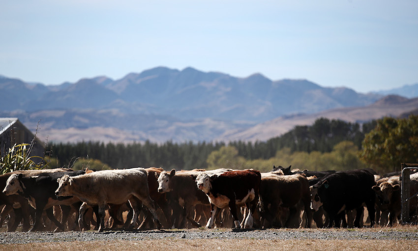
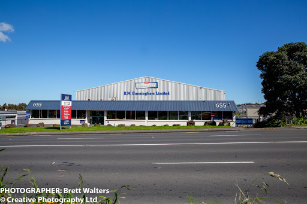
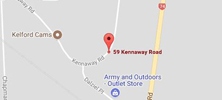

There’s no prouder province in New Zealand than Canterbury, and it’s not just down to the beauty of its snow-clad peaks, lakes and majestic rivers. Canterbury has long been one of the great beef and lamb producing regions in this country, thanks to its unique mix of nature’s gifts and smart farming.

May 15, 2017
D M Dunningham Ltd.
Beef slaughterhouse

Dunninghams is New Zealand’s leading ingredient supplier to the Butchery, Food Manufactures, Processors & Food Service sectors.
We have been partnering with food providers to produce and supply top quality products since 1921 (100 years) and enjoy an excellent reputation for superb cost effective products that deliver consistent quality and performance from decades of industry knowledge.
May 22, 2017
Canterbury Biltong Store
Beef processing plant

The meat processing works supply Canterbury Biltong with Manufacturers Declarations and use meat sourced and processed under New Zealand Beef and Lamb’s Quality Mark Standard.
June 1, 2017
chrischurch airport
airplane transport
Christchurch Airport is the main airport that serves Christchurch. It is the second busiest airport in New Zealand after Auckland airport.It can ensure the foods reach the destination safely and quickly.
June 2, 2017
New World Wellington City
destination

New World Wellington City located in Te Aro is the largest supermarket in wellington city Food safety and storage can be guaranteed.